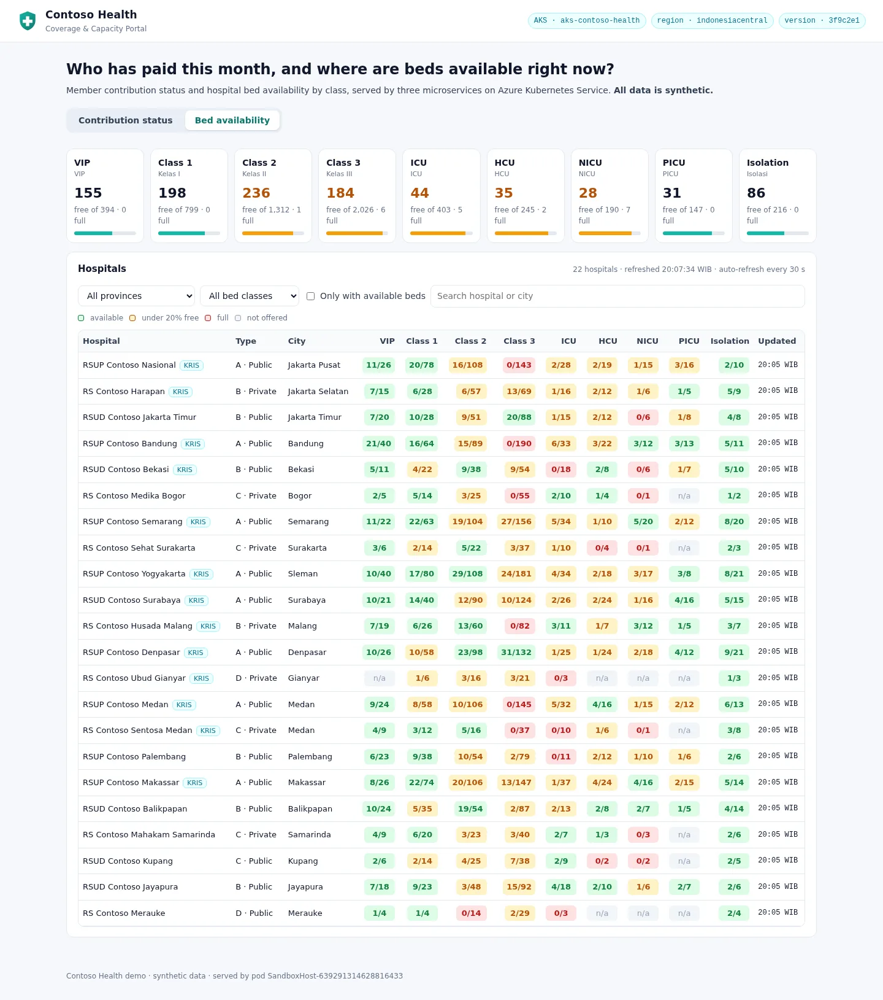
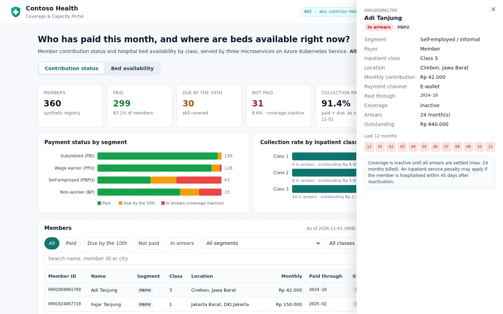

Architecture
Architecture and app
One GitHub repository drives one resource group in Indonesia Central. Delivery, identity, runtime, observability and governance each have one clear owner.

Runtime#
| Component | What it does |
|---|---|
portal (LoadBalancer, 2-4 replicas) | Serves the web UI and is the only public entry point. Proxies /api/membership/* to membership-api and /api/capacity/* to bed-api. |
membership-api (ClusterIP, 2-4 replicas) | Members, monthly contribution, payment status (paid, due by the 10th, in arrears), collection rate and arrears by segment, class and province. |
bed-api (ClusterIP, 2-4 replicas) | 22 hospitals, nine bed classes (VIP, class 1-3, ICU, HCU, NICU, PICU, isolation), capacity and availability that changes every five minutes. |
| Azure Container Registry | Private images tagged with the commit SHA. Kubelet pulls with its managed identity (AcrPull). |
| Azure Policy add-on | Gatekeeper admission control from Azure Policy assignments. |
| Azure Monitor agents | ama-metrics (Prometheus) and ama-logs (Container insights). |
Delivery#
| Change | Path to production |
|---|---|
App code or manifests (src/**, k8s/base/**) | Pull request → CI + CodeQL + review → merge → App workflow builds and pushes images → approval → rollout + smoke test |
Infrastructure (infra/**) | Pull request → Bicep what-if comment → merge → Infrastructure workflow → approval → az deployment group create → App workflow re-deploys |
| Demo operations | Demo scenarios workflow (manual): traffic, fault on/off, policy check |
Identity#
There is exactly one non-human identity with access to Azure: the user-assigned managed identity id-github-contoso-health. GitHub Actions signs in as it with OpenID Connect,
and only from this repository's main branch, pull requests and production environment. Kubernetes access uses Microsoft Entra ID and Azure RBAC; local cluster accounts are disabled.
Well-Architected choices#
| Pillar | Choices in this demo | For production, also consider |
|---|---|---|
| Reliability | Nodes across zones 1-3, cluster autoscaler 2-4, 2+ replicas per service, PodDisruptionBudgets, readiness and liveness probes | Standard tier (uptime SLA), separate user node pool, multi-region |
| Security | OIDC (no secrets), least privilege with an ABAC condition, Entra ID + Azure RBAC, local accounts off, non-root read-only containers, NetworkPolicies, CodeQL, pinned third-party actions | Private cluster or authorized IP ranges, image signing, Defender for Containers, ingress with TLS and WAF |
| Cost optimization | Free tier, autoscaler, Image Cleaner, tags for cost reporting, one-delete clean-up | Reserved instances or savings plan, Spot user pools, log table plans |
| Operational excellence | Everything as code, PR previews, approvals, auto-upgrade (patch) and node OS image upgrades, alert rules in code | Maintenance windows, GitOps (Flux), deployment safeguards |
| Performance efficiency | Azure CNI Overlay with Cilium, HPA on CPU, requests and limits on every container | Load testing, KEDA, node pool right-sizing |
App screenshots#




API reference: App and APIs.